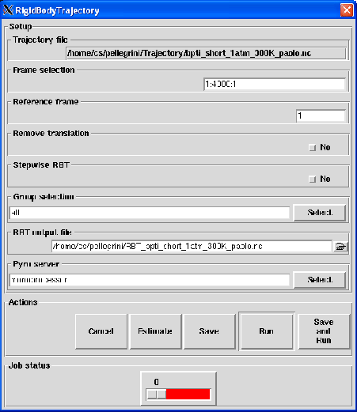

Next: Output
Up: Rigid-Body Trajectory
Previous: Solution of the minimization
Contents
Parameters
Pressing the Rigid-Body Trajectory button will pop up the dialog shown on figure 4.43
Figure 4.43:
The dialog from where the RBT analysis will be set up and run.
|

|
The following input fields controls the parameters for the RBT analysis:
- Trajectory file
Format: string
Default: traj_file where traj_file is the name of the loaded trajectory
Description: the value of this widget can not be changed. It just recalls for information purpose the name
of the trajectory file loaded for the analysis.
- Frame selection
Format: string
Default: 1:traj_length:1 where traj_length is the number of frames of the trajectory.
Description: this widget allows to select the trajectory frames that will be used for the analysis. This must
be a string of the form:
first:last:step
where first is an integer specifying the first frame number to consider, last is an integer specifying the last
frame number to consider and step is an integer specifying the step number between two frames.
For example,
- 2:10:3 will select the frames 2, 5 and 8.
- 1:5:1 will select the frames 1, 2, 3, 4 and 5.
- Reference frame
Format: integer in [1,traj_length] where traj_length is the number of frames of the input trajectory
Default: 1
Description: this widget allows to specify which frame should be the reference for the RBT analysis.
The value entered should be an integer ranging from 1 to traj_length where traj_length is the
number of rames of the input trajectory.
- Remove translation
Format: string equal to yes or no
Default: no
Description: if set to yes the translation motion will be removed from the RBT.
- Stepwise RBT
Format: string equal to yes or no
Default: no
Description: if set to yes, each frame f will serve as the reference for the frame f+1
when defining the RBT canceling the value entred in Reference frame entry.
- Group selection
Format: group selection string
Default: all
Description: this widget allows the selection of the groups of atoms that will be defined as rigid-bodies when performing
the RBT. See Section 4.2.2.3 for more details.
- RBT output file
Format: string
Default: RBT_traj_file.nc where traj_file.nc is the name of the input trajectory
Description: this widget allows to enter the name of the NetCDF output file of the RBT analysis.
Next: Output
Up: Rigid-Body Trajectory
Previous: Solution of the minimization
Contents
pellegrini eric
2009-10-06